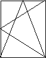
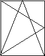
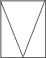
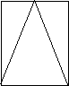
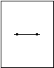
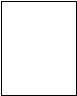

| Enumerator | Description | Figure |
|---|---|---|
| SideHungRightHand | panel that opens to the right when viewed from the outside |  |
| SideHungLeftHand | panel that opens to the left when viewed from the outside |  |
| TiltAndTurnRightHand | panel that opens to the right and is bottom hung |  |
| TiltAndTurnLeftHand | panel that opens to the left and is bottom hung |  |
| TopHung | panel is top hung |  |
| BottomHung | panel is bottom hung |  |
| PivotHorizontal | panel is swinging horizontally (hinges are in the middle) |  |
| PivotVertical | panel is swinging vertically (hinges are in the middle) |  |
| SlidingHorizontal | panel is sliding horizontally |  |
| SlidingVertical | panel is sliding vertically |  |
| RemovableCasement | panel is removable |  |
| FixedCasement | panel is fixed |  |
| OtherOperation | user defined operation type | |
| NotDefined |
Figure 253 — Window panel operations
 EXPRESS-G diagram
EXPRESS-G diagram Link to this page
Link to this page